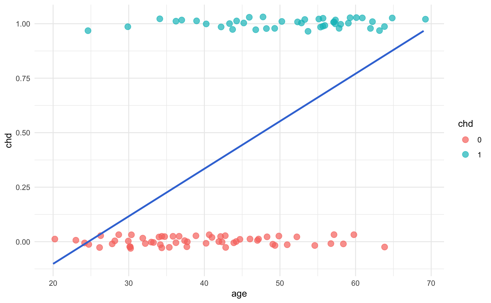
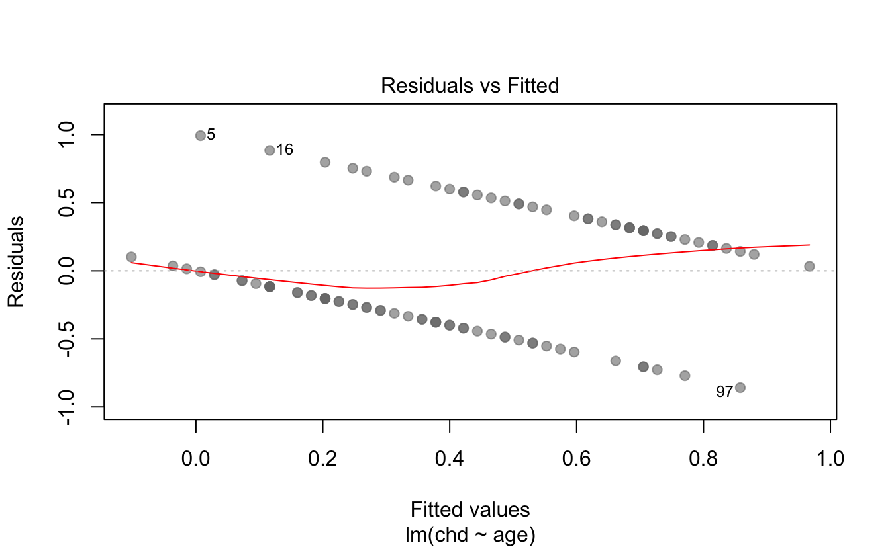

17 Logistic Regression
So far we’ve been dealing with predicting a quantitative response, using mostly linear models. But what about predicting a qualitative or categorical response? We now turn our attention to predicting a discrete (aka categorical) response.
To have a gentle transition from regression models into classification models, we’ll start with the famous logistic regression.
17.1 Motivation
Let’s consider a classic example: predicting heart attack. The data consists of a number of individuals (patients) with some medical variables.
Consider the following (very famous) example, found in Hosmer and Lemeshow (edition from 2000) in which we wish to predict coronary heart disease (chd). The data is relatively small (\(n = 100\) patients), and we start with considering only one predictor: \(age\).
#> age chd
#> 1 20 0
#> 2 23 0
#> 3 24 0
#> 4 25 0
#> 5 25 1
#> 6 26 0For illustration purposes, let’s consider the response \(\mathbf{y}\) and only one predictor \(\mathbf{x}\). If we graph a scatterplot we get:

With respect to the x-axis, we have values ranging from small x’s to large x’s. In contrast, the response is a binary response, so there are only 0’s or 1’s. As you can tell, the distribution of points does not seem to uniform along the x-axis. Moreover, for a given response value, say \(y_i = 0\) there are more small values \(x\) than large ones. And viceversa, for \(y_i = 1\), there are more large values \(x\) than small ones.
In other words, we can see that (in general) younger people are less likely to have CHD than older people. Hence, there seems to be some information about chd in age. The goal is to fit a model that predicts chd from age:
\[ \text{chd} = f(\text{age}) + \varepsilon \]
17.1.1 First Approach: Fitting a Line
As a naive first approach, we could try to fit a linear model: $ = b_0 + b_1 = $ where:
\[ \mathbf{X} = \begin{pmatrix} 1 & x_1 \\ 1 & x_2 \\ \vdots & \vdots \\ 1 & x_n \\ \end{pmatrix}; \hspace{5mm} \mathbf{b} = \begin{pmatrix} b_0 \\ b_1 \\ \end{pmatrix} \]
So let’s see what happens if we use least squares to fit such line.
# fit line
reg = lm(chd ~ age, data = dat)
summary(reg)
#>
#> Call:
#> lm(formula = chd ~ age, data = dat)
#>
#> Residuals:
#> Min 1Q Median 3Q Max
#> -0.85793 -0.33992 -0.07274 0.31656 0.99269
#>
#> Coefficients:
#> Estimate Std. Error t value Pr(>|t|)
#> (Intercept) -0.537960 0.168809 -3.187 0.00193 **
#> age 0.021811 0.003679 5.929 4.57e-08 ***
#> ---
#> Signif. codes: 0 '***' 0.001 '**' 0.01 '*' 0.05 '.' 0.1 ' ' 1
#>
#> Residual standard error: 0.429 on 98 degrees of freedom
#> Multiple R-squared: 0.264, Adjusted R-squared: 0.2565
#> F-statistic: 35.15 on 1 and 98 DF, p-value: 4.575e-08There seems to be some sort of positive relation between age and chd. To better see this, let’s take a look at the scatterplot, and see how the fitted line looks like:

This model yields a very awkward fit, with a couple of issues going on. For one thing, the line, and consequently the predicted values \(\hat{y}_i\), extend beyond the range \([0,1]\). Think about it: we could obtain fitted values \(\hat{y}_i\) taking any number between 0 and 1 (which, in this context, makes no sense). We could also get negative predicted values, or even predicted values greater than 1! On the other hand, if we examine the residuals, then things don’t look great for the linear regression.

So, we need a way to fix these problems.
17.1.2 Secodn Approach: Harsh Thresholding
One idea to try to solve the issues from the regression line would be to set some threshold \(c\) (for example, \(c = 0.5\)) and look at how the signal compares to it, which will allow us to create a decision rule. That is, for a given age value \(x_0\), compare its predicted value to the threshold. If \(\hat{y}_0 \geq 0.5\), classify it as “1,” otherwise classify it as “0.”
\[ \hat{y}_i = \begin{cases} 1 \quad \text{if} & b_0 + b_1 x_i \geq c \\ 0 \quad \text{if} & b_0 + b_1 x_i < c \end{cases} \]
We can further arrange the terms above: \(\hat{f}(x_i) = b_0 + b_1 x_i - c\)
\[\begin{align*} \hat{f}(x_i) &= b_0 + b_1 x_i - c \\ &= b_{0}^{'} + b_1 x_i, \qquad b_{0}^{'} = b_0 - c \end{align*}\]
By paying attention to the sign of the signal, we can transform our fitted model into: \(\text{sign}(\mathbf{b^\mathsf{T}x})\).
\[ \hat{y}_i = \begin{cases} 1 \quad \text{if} & \text{sign}(b_{0}^{'} + b_1 x_i) \geq 0 \\ 0 \quad \text{if} & \text{sign}(b_{0}^{'} + b_1 x_i) < 0 \end{cases} \]
This transformation imposes a harsh threshold on the signal. Notice that the signal is still linear but we apply a non-linear transformation \(\phi(x) = \text{sign}(x)\).
Insert image of harsh threshold
I like to think about this transformation is a quick fix. It’s definitely not something to be proud of, but you could use it to get the job done—although in a quick-dirty fashion.
17.1.3 Third Approach: Conditional Means
Using a sign-transformation allows us to overcome some of the limitations of the linear regression model, but it’s far from ideal.
An alternative approach involves calculating conditional means. How does that work? The idea is very simple and clever. Say you are looking at patients \(x = 24\) years old, and you count the relative frequency of chd cases. In other words, you count the proportion of chd cases among individuals 24 years old. This is nothing else than computing the conditional mean: \(avg(y_i | x_i = 24)\).
Following this idea, we could compute all conditional means for all age values: \((\bar{y}|x_i = 25), (\bar{y}|x_i = 26), \dots, (\bar{y}|x_i = 69)\).
#> age_group
#> 20-29 30-34 35-39 40-44 45-49 50-54 55-59 60-69
#> 10 15 12 15 13 8 17 10Now that we have age by groups, we can get the proportion of coronary heart disease cases in each age group
#> # A tibble: 8 x 3
#> age_group count_chd prop_chd
#> <fct> <int> <dbl>
#> 1 20-29 10 0.1
#> 2 30-34 15 0.133
#> 3 35-39 12 0.25
#> 4 40-44 15 0.333
#> 5 45-49 13 0.462
#> 6 50-54 8 0.625
#> 7 55-59 17 0.765
#> 8 60-69 10 0.8And then graph these averages on the scatterplot, connecting the dots with a line:

Sometimes, however, you may not have data points for a specific \(x\)-value. So instead we can use groups of ages. For example, say we define a first group of ages to be 24 - 29 years. The corresponding average will be: \(avg(y_i | x_i = \text{group}_1)\)
Theoretically, we are modeling the conditional expectations: \(\mathbb{E}(y|x)\). Which is exactly the regression function.
By connecting the averages, we get an interesting sigmoid pattern
This pattern can be approximated by some mathematical functions, the most popular being the so-called logistic function:
\[ \text{logistic function:} \qquad f(s) = \frac{e^{s}}{1 + e^{s}} \]

Sometimes you may also find the logistic equation in an alternative form:
\[\begin{align*} f(x) &= \frac{e^{\beta_0 + \beta_1 x}}{1 + e^{\beta_0 + \beta_1 x}} \\ &= \frac{1}{\frac{1 + e^{\beta_0 + \beta_1 x}}{e^{\beta_0 + \beta_1 x}}} \\ &= \frac{1}{\frac{1}{e^{\beta_0 + \beta_1 x}} + 1} \\ &= \frac{1}{1 + e^{-(\beta_0 + \beta_1 x})} \end{align*}\]
Since probability values range inside \([0,1]\), instead of using a line to try to approximate these values, we should use a more adequate curve. This is the reason why sigmoid-like curves, such as the logistic function, are preferred for this purpose.
17.2 Logistic Regression Model
We consider the following model:
\[ Prob(y \mid x; \mathbf{b}) = f(x) \]
We don’t get to observe the true probability; rather, we observe the noisy target \(y_i\), generated/affected by the probability \(f(x)\). How will we model the probability? We would ideally like a mathematical function that looks like the sigmoid shape from the toy example above; that is, use a sigmoid function. The most famous function—and the function we will use—is the logistic function defined in the previous section
\[ \text{logistic function:} \qquad f(s) = \frac{e^{s}}{1 + e^{s}} \]
In other words, we have the following model:
\[ Prob(y _i \mid \mathbf{X} ; \boldsymbol{\beta} ) = \frac{e^{\mathbf{b^\mathsf{T} x_i}}}{1 + e^{\mathbf{b^\mathsf{T} x_i}}} \] where here \(\mathbf{x_i}\) represents the vector of observations for individual \(i\).

Figure 17.1: Regression Model Diagram
Hence we have:
\[ Prob(y_i \mid \mathbf{x_i}, \mathbf{b}) = \begin{cases} h(\mathbf{x_i})& \to y_i = 1 \\ 1 - h(\mathbf{x_i}) & \to y_i = 0 \\ \end{cases} \]
where \(h\) denotes the logistic function.
17.2.1 The Criterion Being Optimized
We will not be using the MSE as our error measure (since doing so would make no sense in this particular context). Instead, we will use an “error” based on Maximum Likelihood Estimation. In order to do so, we must assume that our model is true; that is, that \(h(x) = f(x)\); given that assumption, we ask “how likely is it that we observe the data we already observed (i.e. \(y_i\))?”
We start with the likelihood function \(L(\mathbf{b})\). Note that \(L\) implicitly also depends on \(\mathbf{X}\), and also compute the log-likelihood \(\ell(\mathbf{b})\):
\[\begin{align*} Prob(\mathbf{y} \mid x_1, x_2, \dots, x_p; \mathbf{b}) & = \prod_{i=1}^{n} P(y_i \mid \mathbf{b^\mathsf{T} x_i} ) \\ & = \prod_{i=1}^{n} h(\mathbf{b^\mathsf{T} x_i})^{y_i} \left[ 1 - h(\mathbf{b^\mathsf{T} x_i} ) \right]^{1 - y_i} \\ \ell(\mathbf{b}) := \ln[L(\mathbf{b}) ]& = \sum_{i=1}^{n} \ln\left[ P(y_i \mid \mathbf{b^\mathsf{T} x_i} ) \right] \\ & = \sum_{i=1}^{n} \left\{ y_i \ln[h(\mathbf{b^\mathsf{T} x_i})] + (1 - y_i) \ln[ 1 - h(\mathbf{b^\mathsf{T} x_i} ) ] \right\} \\ & = \sum_{i=1}^{n} \left[ y_i \ln\left( \frac{e^{\mathbf{b^\mathsf{T} x_i}} }{1 + e^{\mathbf{b^\mathsf{T} x_i} } } \right) + (1 - y_i) \ln \left( 1 - \frac{e^{\mathbf{b^\mathsf{T} x_i}} }{1 + e^{\mathbf{b^\mathsf{T} x_i} } } \right) \right] \\ & = \sum_{i=1}^{n} \left[ y_i \mathbf{b^\mathsf{T} x_i} - \ln \left( 1 + e ^{\mathbf{b^\mathsf{T} x_i} } \right) \right] \end{align*}\]
Now, here is the bad news: differentiating and setting equal to 0 yields and equation for which no closed-form solution exists. To find the maximum likelihood estimate of \(\mathbf{b}\), we require an iterative method: for example, the Newton-Raphson method, or gradient ascent.
\[\begin{align*} \nabla \ell(\mathbf{b}) & = \sum_{i=1}^{n} \left[ y_i \mathbf{x_i} - \left( \frac{e^{\mathbf{b^\mathsf{T} x_i}} }{1 + e^{\mathbf{b^\mathsf{T} x_i} } } \right) \mathbf{x_i} \right] \\ & = \sum_{i=1}^{n} \left[ y_i \mathbf{x_i} - \phi(\mathbf{b^\mathsf{T} x_i} ) \mathbf{x_i} \right] \\ & = \sum_{i=1}^{n} \left[ y_i - \phi(\mathbf{b^\mathsf{T} x_i} ) \right] \mathbf{x_i} \end{align*}\]
Hence, in gradient ascent, we would use:
\[ \mathbf{b}^{(s + 1)} = \mathbf{b}^{(s)} + \alpha \nabla \ell(\mathbf{b}^{(s)}) \]
17.2.2 Another Way to Solve Logistic Regression
The overall picture stills stands:
Now, however, we change our probability expression a bit:
\[ Prob(y_i \mid \mathbf{x_i}, \mathbf{b}) = \begin{cases} h(\mathbf{x_i})& \to y_i = 1 \\ 1 - h(\mathbf{x_i}) & \to y_i = -1 \\ \end{cases} \]
We also need a new way of combining these expression (like we did inside the likelihood expression). They key observation is to note the following: \(h(-s) = 1 - h(s)\). With this, we begin computing the likelihood:
\[\begin{align*} Prob(\mathbf{y} \mid x_1, x_2, \dots, x_p; \mathbf{b}) & = \prod_{i=1}^{n} P(y_i \mid \mathbf{b^\mathsf{T} x_i} ) \\ & = \prod_{i=1}^{n} \phi\left( y_i \mathbf{b^\mathsf{T} x_i} \right) \\ \ell(\mathbf{b}) : = \ln[L(\mathbf{\beta})] & = \sum_{i=1}^{n} \ln\left[ \phi\left( y_i \mathbf{b^\mathsf{T} x_i} \right) \right] \\ & \Rightarrow \frac{1}{n} \sum_{i=1}^{n} \underbrace{ \ln\left[ \phi\left( y_i \mathbf{b^\mathsf{T} x_i} \right) \right] }_{\text{logit}} \end{align*}\]
In other words, we can perform the following minimization problem:
\[\begin{align*} & \min_{\mathbf{b}} \left\{ - \frac{1}{n} \sum_{i=1}^{n} \ln\left[ \phi\left( y_i \mathbf{b^\mathsf{T} x_i} \right) \right] \right\} \ \Leftrightarrow \ \boxed{ \min_{\mathbf{b}} \left\{ \underbrace{ \frac{1}{n} \sum_{i=1}^{n} \underbrace{ \ln\left( 1 + e^{-y_i \mathbf{b^\mathsf{T} x_i} } \right) }_{\text{pointwise error}} }_{E_{in}(\mathbf{b})} \right\} } \end{align*}\]
The product \(y_i \mathbf{b^\mathsf{T} x_i} =: y_i \mathbf{s}\) (where \(\mathbf{s}\) represents “signal”) can be understood using the following table:
We can think of the term \(\mathbf{b^\mathsf{T} x_i}\) as a numeric value ranging from “very small” to “very large”. A small signal means that the probability \(\phi(\mathbf{b^\mathsf{T} x_i})\) will be small. Conversely, a large signal means that \(\phi(\mathbf{b^\mathsf{T} x_i})\) will be large. In turn, the term \(y_i\) can be either \(-1\) or \(+1\).
If we have a correct prediction, we would expect a small probability \(\phi(\mathbf{b^\mathsf{T} x_i})\) to agree with \(y_i = -1\). Likewise, we would also expect a large probability \(\phi(\mathbf{b^\mathsf{T} x_i})\) to agree with \(y_i = +1\).
In turn, if we have an incorrect prediction, we would expect a small probability \(\phi(\mathbf{b^\mathsf{T} x_i})\) to mismatch \(y_i = +1\). Likewise, we would also expect a large probability \(\phi(\mathbf{b^\mathsf{T} x_i})\) to disagree with an observed \(y_i = -1\).
With agreements, \(e^{-y_i \mathbf{b^\mathsf{T} x_i} }\) will be small, and will consequently give you a small error.
With disagreements, \(e^{-y_i \mathbf{b^\mathsf{T} x_i} }\) will be large, and will consequently give you a large error.
We will also refer to our \(E_{in}(\mathbf{b})\) quantity as the mean cross-entropy error. Technically it isn’t a “cross-entropy” measure in the classification sense, however we will ignore that technicality for now. We find:
\[ \nabla E_{in}(\mathbf{b}) = - \frac{1}{n} \sum_{i=1}^{n} \left( \frac{1}{1 + e^{-y_i \mathbf{b^\mathsf{T} x_i} } } \right) y_i \mathbf{x_i} \]
and we would use gradient descent to compute the minimum.